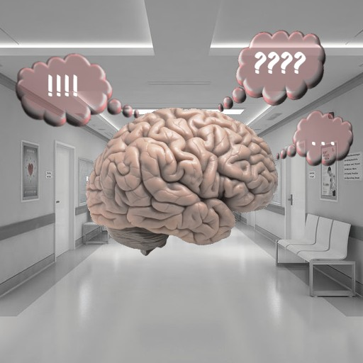
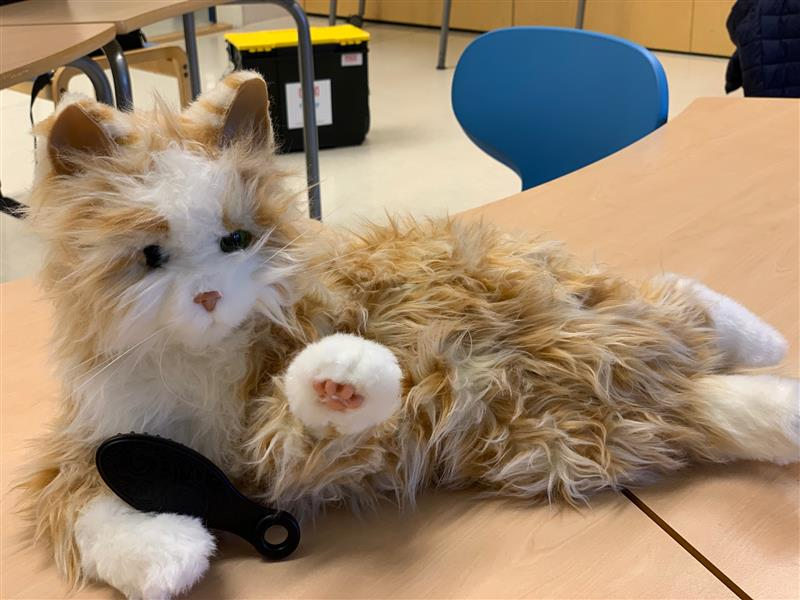

Muurahainen
Haluaisimme että nettisivulla ihmiset saavat lisätietoa muistisairaudesta ja sen oireista, ja mitä hoitokeinoja olisi tarjolla.
Nettisivu on kaikille mutta kohderyhmänä vanhukset.
Miksi palvelu tehdään?
Jos henkilö haluaa etsiä tietoa sairaudesta tai sairauden oireista niin nettisivulta voi löytyä.
